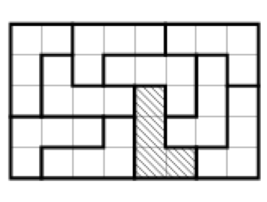

At the disposal of a tile layer there are 10 identical tiles, each of which consists of 4 squares and has the shape of the letter L $($all tiles are oriented the same way$)$. Can he make a rectangle with a size of $5 \times 8$? $($The tiles can be rotated, but you cannot turn them over$)$. For example, the figure shows the wrong solution: the shaded tile is incorrectly oriented.

Yes, it is possible $($see the figure$)$.